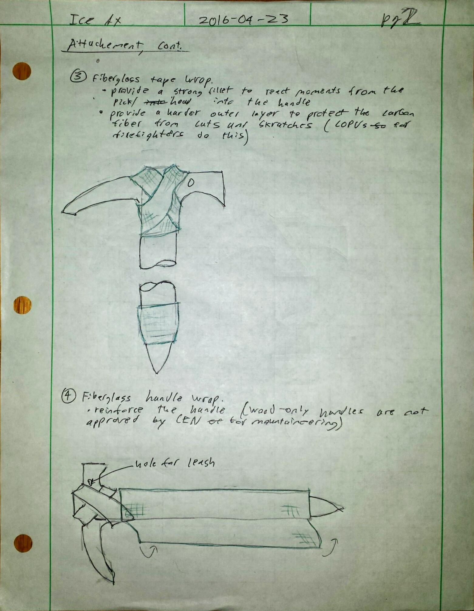
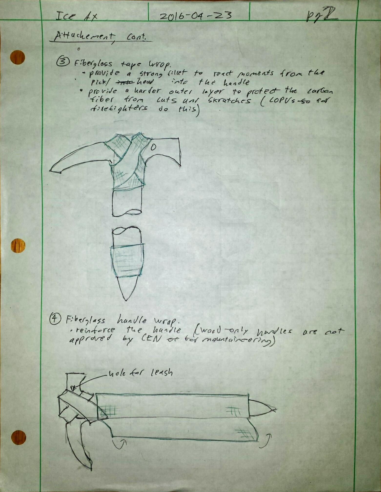

I spent a few hours designing and building my own ice ax to practice metalworking and composite layups.
Design
The ice ax has a 14 cm pick and a 70 cm handle. I sized the handle length to match the distance between my palm and ankle, the recommended size for mountaineering axes. The pick and the shaft form a 70 degree angle, which is typical for mountaineering axes (technical climbing tools use a steeper angle of 50 to 60 degrees).
The head and spike are made from steel. Typical ax materials are steel, titanium and aluminum - I chose steel because titanium was too expensive, and aluminum would be too soft. I have no idea what alloy the steel is, it was a piece of scrap I found lying around in the shop.
The head and spike are attached to the shaft by slotted joints held in place by 6.4 mm (0.25 inch) steel pins. The joints are then tension-wrapped with unidirectional carbon fiber tow to prevent the wood slot from splitting. Finally, the joints are wrapped in fiberglass tape to provide additional strength and to protect the carbon fiber from abrasion. (The fiberglass abrasion protection is inspired by a few firefighting COPVs I've seen).
 

Fabrication
I cut the outline of the head from steel stock on a bandsaw. I then cut teeth into the pick with an angle grinder, and sharpened the tip and adze on a bench grinder. I cut the slots and pin holes into the wood, and used an arbor press to insert the pins.

Next, I did the carbon fiber wrap. I then overwrapped with fiberglass tape, and wrapped the handle with fiberglass cloth. I used using West Systems 105/209 epoxy for the layups. Next, I vacuum-bagged the layup to remove excess epoxy and press the tape wrap into the head-shaft joint.